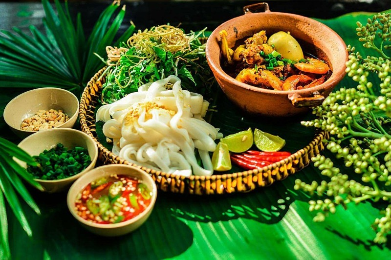

Mỳ Quảng Đà Nẵng là món ăn đậm chất miền Trung, mộc mạc nhưng đầy hương vị. Sợi mì mềm, dày vừa phải, ăn kèm với tôm, thịt, trứng và đậu phộng rang. Nước dùng không nhiều nhưng đậm đà. Rau sống tươi xanh, bánh tráng nướng giòn tan, tất cả hòa quyện tạo nên một món ăn vừa ngon miệng, vừa no bụng.
Giá cả bình dân, chỉ khoảng 25.000 – 45.000đ/tô. Rất đáng thử nếu bạn đến Đà Nẵng
Món này khá phổ biến tại Đà Nẵng và cũng có nhiều quán ngon, mọi người tham khảo các quán phía dưới nhé.
1 - Quán Mỳ quảng 717 - Địa chỉ 717 Tôn Đản
Bản đồ: 📍 Xem trên Google Maps
2 - Mỳ Quảng Quê Xưa - 165 Núi Thành
Bản đồ: 📍 Xem trên Google Maps